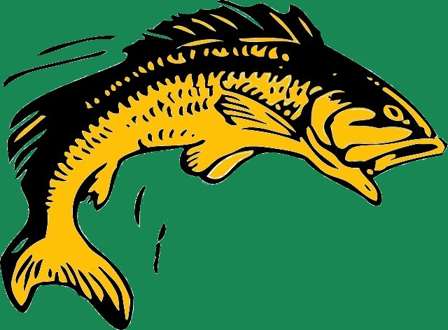

L'association
La pêche Aixoise regroupe des passionnés, amoureux de la pêche sous toutes ses formes, des adhérents et bénévoles de tous horizons qui aiment la pêche à la truite. Venez pratiquer votre activité favorite à la journée ou à la demi journée au bord de l'étang de Saint-Martin. Autour d'un barbecue, ou d'un pic-nic pour se détendre. Un lâcher de truite est effectué tous les vendredi matin.